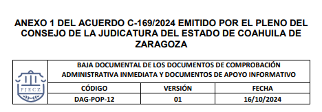
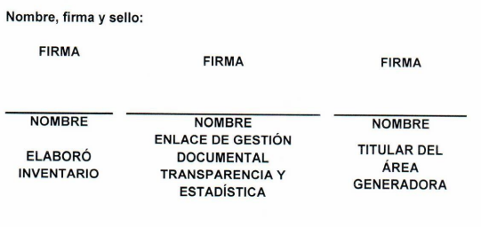
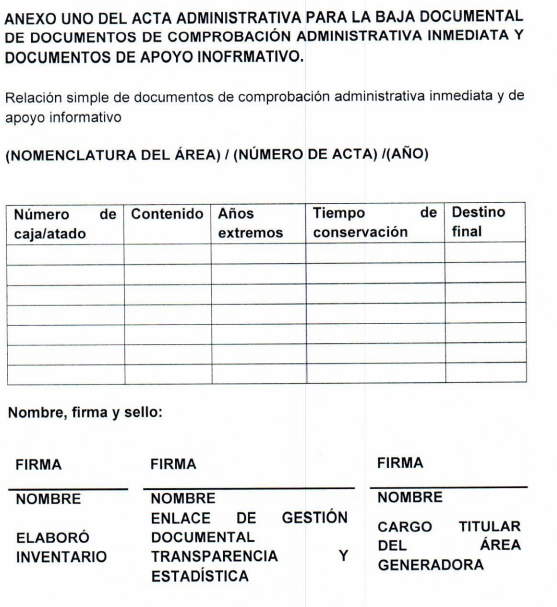
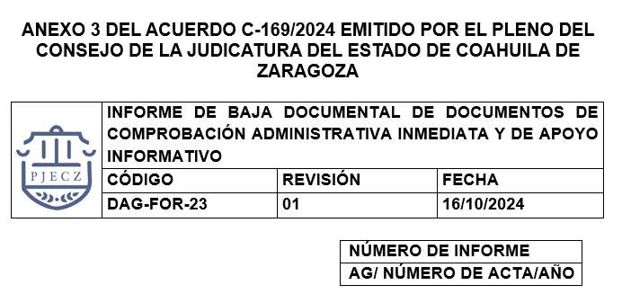

Key: AC20241031A
Resumen: En este acuerdo el Consejo de la Judicatura del Estado (en adelante “el Consejo”) aprueba el Procedimiento de Baja Documental de Documentos de Comprobación Administrativa Inmediata (en adelante “Procedimiento de BD de DCAI y DAI”) de los órganos del Poder Judicial del Estado de Coahuila de Zaragoza. Asimismo, en este acuerdo se instruye a las autoridades competentes para el debido cumplimiento del presente acuerdo.
Saltillo, Coahuila de Zaragoza. Acuerdo correspondiente a la sesión del 30 de octubre de 2024.
I. CONSIDERACIONES
1. Antecedentes
La licenciada Mixely Martínez Mata, Directora del Archivo General del Poder Judicial del Estado de Coahuila de Zaragoza, (en adelante “Directora del AG”) el 28 de octubre de 2024, envió a la Secretaría de Acuerdo y Trámite del Consejo de la Judicatura el oficio AJG/553/2024.
La Directora del AG, a este oficio adjuntó tres anexos consistentes en:
-
Procedimiento de Baja Documental de los Documentos Administrativos de Comprobación Inmediata y Documentos de Apoyo Informativo.
-
Acta administrativa para la Baja Documental de Documentos de Comprobación Inmediata y de Apoyo Informativo.
-
Informe de Baja Documental de Documentos de Comprobación Administrativa Inmediata y de Apoyo Informativo.
En este oficio, la Directora del AG propone el procedimiento para la Baja Documental de Comprobación Administrativa Inmediata. La Directora del AG, comenta en su oficio que con base en la certificación de la Norma ISO 30301:2019 en la que se menciona que se deben establecer y documentar los criterios para determinar los periodos de retención de los documentos de acuerdo con los requisitos de cada procedimiento de trabajo, hace la propuesta del procedimiento de Baja Documental de los Documentos de Comprobación Administrativa Inmediata y de Apoyo Informativo.
La Directora del AG comenta que en este procedimiento se propone el calendario de conservación de documentos, los cuales fueron previamente consultados con la Comisión Interdisciplinaria de Archivos (en adelante “CIA”), con las áreas generadoras y con la Visitaduría Judicial General.
De esta manera, tomando en cuenta que la propuesta planteada por la Directora del AG es acorde a las políticas públicas que se han implementado en materia archivística con el objetivo de tener una mejor gestión documental, el Consejo estima oportuno pronunciarse respecto de tal propuesta en el presente acuerdo.
2. Facultades del Consejo de la Judicatura
El Consejo de la Judicatura del Estado de Coahuila de Zaragoza, es el órgano del Poder Judicial del Estado de Coahuila de Zaragoza, que tiene como funciones la administración, vigilancia y disciplina de los órganos jurisdiccionales, según lo establece el artículo 143 de la Constitución Política del Estado de Coahuila de Zaragoza.
De acuerdo con el artículo 57, fracciones VIII, IX y XI, de la Ley Orgánica del Poder Judicial del Estado de Coahuila de Zaragoza (en adelante “LOPJECZ”), tiene las siguientes facultades: supervisar el funcionamiento de los órganos que integran el Poder Judicial, así como el desempeño de sus servidores públicos; y dictar las providencias necesarias para el mejoramiento de la administración de justicia; fijar los criterios generales de evaluación mensual de juicios iniciados, en trámite y concluidos en el Poder Judicial, basados, por los menos, en el rendimiento, eficiencia y eficacia. Para esto último, en su caso, previa ponderación de las evaluaciones respectivas, tomar las providencias que estimen necesarias con excepción del Pleno del Tribunal y expedir los reglamentos y acuerdos generales que sean necesarios para regular el funcionamiento del Poder Judicial y de sus órganos.
Ahora bien, el Consejo de la Judicatura, es un órgano de administración encargado de emitir las providencias necesarias para el adecuado funcionamiento de los órganos que integran el Poder Judicial del Estado de Coahuila de Zaragoza, todo ello encaminado a contribuir con el mejoramiento de la administración de justicia.
El Archivo Judicial General (en adelante “AJG”) es un órgano administrativo del Poder Judicial del Estado de Coahuila de Zaragoza encargado de la recepción, deposito, resguardo, conservación, orden y clasificación de expedientes y documentos generados por los órganos judiciales y dependencias administrativas del Poder Judicial, así como a proporcionar servicios de consulta a los abogados y público en general que lo requiera .
Por ende, su aprobación resulta competencia del Consejo, al constituir una herramienta que trasciende en materia de gestión y control documental, pues con el procedimiento de baja documental se fijan las bases para el tratamiento apropiado de los archivos generados, producidos, obtenidos, adquiridos, transformados o en posesión de cada una de las áreas del Poder Judicial del Estado de Coahuila de Zaragoza, lo que impacta directamente en la administración de justicia y el manejo de documentos generados en este poder público.
3. Justificación para la emisión del presente acuerd
El artículo 17 de la Constitución Política de los Estados Unidos Mexicanos establece que toda persona tiene derecho a que se le administre justicia por tribunales que estarán expeditos para impartirla en los plazos y términos que fijen las leyes, emitiendo sus resoluciones de manera pronta, completa e imparcial. Su servicio será gratuito, quedando en consecuencia, prohibidas las costas judiciales.
El artículo 6, apartado A, de la Constitución General prevé que el derecho a la información deberá ser garantizado por el Estado y que toda persona tiene derecho al libre acceso a información plural y oportuna, así como a buscar, recibir y difundir información e ideas de toda índole por cualquier medio de expresión.
Asimismo, el artículo 8 de la Constitución Local, prevé que la ley establecerá las formas, términos y procedimientos de los instrumentos de participación ciudadana y comunitaria, para garantizar el derecho a participar en la vida pública del estado y de los municipios. El acceso a la información pública garantiza el derecho a la participación de las personas.
El artículo 24, fracción IV, de la Ley General de Transparencia y Acceso a la Información Pública, dispone que, para el cumplimiento de los objetivos de la Ley, los sujetos obligados deberán constituir y mantener actualizados sus sistemas de archivo y gestión documental, conforme a la normatividad aplicable.
El artículo 75 de la Ley de Acceso a la Información Pública para el Estado de Coahuila de Zaragoza estipula que los sujetos obligados deberán preservar documentos y expedientes en archivos administrativos organizados y actualizados, de conformidad con las demás disposiciones aplicables, asegurando su adecuado funcionamiento. Debiendo expedir lineamientos de gestión documental y archivo a su interior, que permita el acceso sencillo a la información, de conformidad con las disposiciones en la materia.
Además, en el manejo de los documentos, los sujetos obligados deberán observar los principios de disponibilidad, eficiencia, localización, integridad y conservación .
Ahora bien, el artículo 78, fracción II, de la Ley de Acceso a la Información Pública para el Estado de Coahuila de Zaragoza dispone que el Poder Judicial del Estado es competente para regular en materia de archivos y que contará con un área como responsable de la organización y regulación de su archivo administrativo.
Es por ello que el Poder Judicial del Estado, tiene la obligación de establecer políticas, criterios, principios y bases generales para la organización, conservación, administración y preservación homogénea de los archivos.
Asimismo, la Ley General de Archivo (“LGA”) estipula en su artículo 11, fracción XI, que los sujetos obligados deberán aplicar métodos y medidas para la organización, protección y conservación de los documentos de archivo, considerando el estado que guardan y el espacio para su almacenamiento; así como procurar el resguardo digital de dichos documentos, de conformidad con dicha ley y las demás disposiciones jurídicas aplicables.
El artículo 28, fracción, II, de la LGA, establece que el área coordinadora de archivo tendrá la función de elaborar criterios específicos y recomendaciones en materia de organización y conservación de archivos, cuando la especialidad del sujeto así lo requiera.
El Consejo constata que el Archivo General actualmente se encuentra en procedimiento de certificación de la norma ISO 30301. Esta norma ISO 30301 es un estándar internacional que establece los requisitos y directrices para la gestión de documentos en las organizaciones. Tiene como objetivo principal asegurar que los documentos se gestionen de manera eficiente, garantizando su disponibilidad, integridad y confidencialidad a lo largo de su ciclo de vida .
La norma ISO 30301 es una herramienta fundamental para quienes desean mejorar su gestión documental y garantizar la disponibilidad y confidencialidad de la información. Además, esta herramienta permite mejorar los procedimientos de destrucción de documentación, lo que conlleva a que los archivos sean más eficientes.
De esta manera, esta certificación brindará amplios beneficios en materia de gestión y manejo documental de las series que se generan en este poder público. Uno de los principales beneficios de la implementación de la norma ISO 30301 es la optimización de procesos de gestión documental, contribuyendo a una mayor eficiencia operativa. Por otro lado, también se reducen riesgos, pues, al establecer un sistema de gestión documental robusto, se minimiza el riesgo de pérdida, mal uso o acceso no autorizado a la información. Asimismo, permite contar con información confiable y actualizada facilitando la toma de decisiones informadas y basadas en datos reales.
El Consejo pone de manifiesto que, en materia de gestión documental, las políticas públicas implementadas en este poder público están relacionadas recientemente con la renovación y mejoramiento del Archivo General del Poder Judicial del Estado de Coahuila de Zaragoza. Prueba de ello es la implementación del Sistema de Gestión Digital de Documentos de Archivo (SIGDDA) , el programa de levantamiento de inventario del Archivo Judicial General y desde luego el Proyecto de Valoración Documental del Poder Judicial del Estado de Coahuila de Zaragoza (“PVD del PJECZ”).
El PVD del PJECZ, tiene por objeto realizar una valoración documental en los órganos jurisdiccionales, no jurisdiccionales y administrativos para conocer; procesos, procedimientos, registros y series que integran en el ejercicio de funciones y atribuciones de cada área, con el propósito de verificar plazos de conservación y destino final de documentos y con ello eficientizar el funcionamiento de los archivos de trámite y concentración de este Poder Judicial del Estado de Coahuila de Zaragoza.
Estas herramientas contribuyen en el mejoramiento de la gestión documental, así como permiten modernizar los procesos operativos del Archivo Judicial General. Incluso, con tales herramientas se puede acceder a inventarios confiables, con lo que se logra un mayor y eficiente acceso a la información que se maneja en los distintos órganos de este poder público, además de contar con plazos de conservación definidos para lograr los objetivos planteados en materia de gestión y control documental.
Además, con el PVD del PJECZ permitirá establecer y definir un catálogo de disposición documental con el que se precisarán los plazos de conservación de los documentos de archivo y los listados de documentos administrativos de comprobación inmediata y de apoyo informativo.
Ahora bien, el Consejo advierte que, en los órganos jurisdiccionales, no jurisdiccionales y administrativos, se pueden producir diversos tipos de documentos. Estos documentos pueden ser desde documentos de archivo , y los Documentos de Apoyo Informativo (“DAI”) que son los que están constituidos por ejemplares de origen y características diversas cuya utilidad es para apoyo de las tareas asignadas. Un ejemplo de ellos puede ser leyes impresas o acumulación de copias y fotocopias y proyectos impresos para su revisión sin sellos, rúbricas o firmas. Estos documentos carecen de conceptos tales como vigencia o valores administrativos. Por tal razón, no se consideran con patrimonio documental.
Por otro lado, existen los Documentos de Comprobación Administrativa Inmediata (DCAI). Los DCAI son aquellos producidos de forma sistemática y que contienen información variable que se maneja por medio de formatos, tales como vales de fotocopias, fichas de control de correspondencia, solicitudes de papelería, copias de diversa documentación, entre otros. Estos documentos no son fundamentales para la gestión institucional y son de control interno en los procesos y procedimientos de gestión .
Las características de estos DCAI son las siguientes:
-
Son creados o recibidos por las instituciones en el curso de sus trámites administrativos.
-
Son producidos en forma natural en función de una actividad administrativa.
-
Son comprobantes de la realización de un acto administrativo inmediato.
-
Su vigencia administrativa es inmediata o no puede exceder más de un año.
-
No deben de ser transferidos a un archivo de concentración. En caso de ser transferidos, debe ser para su debida depuración.
-
Su baja debe darse de manera inmediata al término de su utilidad y esto se hace a través de un acta administrativa de baja documental.
El Consejo constata que a lo largo de los años los órganos jurisdiccionales, no jurisdiccionales y administrativos del Poder Judicial del Estado de Coahuila de Zaragoza, han estado acumulando DAI y DCAI. Además, se tiene conocimiento que en la actualidad los órganos jurisdiccionales, no jurisdiccionales y administrativos presentan altos niveles de saturación de documentos y objetos resguardados y en algunos casos, por los plazos de conservación o por la naturaleza de los propios documentos, resulta innecesaria su conservación.
El Consejo indica que el Poder Judicial del Estado de Coahuila, se encuentra avanzando en la modernización de los servicios y trámites que se ofrecen por parte del Archivo General. Ya que, se está trabajando en la digitalización y en el inventario de los documentos de archivo, procurando con ello una mayor preservación que su ejemplar físico y reduciendo el uso de papel, así como liberando las áreas de almacenamiento.
Sin embargo, como ya se explicó, los DCAI son documentos que si bien, pueden conservarse en los archivos de trámite de los órganos, su conservación no debe de exceder más de un año o bien no deben durar más del tiempo que refieran las áreas productoras que deben ser conservados. Además, este tipo de documentación no debe ser resguardada en el archivo de concentración, ya que, una vez que cumpla con su vigencia deben ser destruidos.
Asimismo, los DAI, no contienen valores documentales y estos deben ser destruidos una vez que su utilidad haya concluido.
En ese sentido, el Consejo refiere que es oportuno aprobar el procedimiento de baja documental de este tipo documentación. Ya que, es necesario que se sigan implementando políticas en materia de archivo que permita a este poder público contar con archivos limpios, depurados, con información real y documentos de archivo que sean de utilidad y contengan valores patrimoniales y documentales.
4. Procedimiento de baja documental de los DCAI y DAI
El procedimiento de baja documental tiene por objeto precisar el procedimiento de baja documental de los DCAI y los DAI que no cuentan con valores. Asimismo, tiene por objeto asegurar que la información se destruya de manera segura, liberando espacio físico y ayuda a contribuir en la organización y orden dentro de los órganos jurisdiccionales, no jurisdiccionales y administrativos.
Además, con este procedimiento de baja documental se asegura que en los archivos de trámite y en los archivos de concentración del Poder Judicial del Estado de Coahuila de Zaragoza, de los órganos solo se conserven documentos que tienen valor documental.
El procedimiento de baja documental de los DCAI y DAI, consiste en la depuración sistemática y controlada de los documentos que no deben ser transferidos al archivo de concentración, ya que, no contienen valores documentales y no son necesarios para la gestión institucional. Estos documentos son generados para un mayor control en los procesos internos.
El Consejo constata que al oficio AG/553/2024, la Directora del AG, adjuntó el procedimiento de Baja de los Documentos de Comprobación Administrativa Inmediata y Documentos de Apoyo Informativo.
El Consejo advierte que, de acuerdo a los documentos compartidos por la Directora del AG, en este procedimiento de BD de DCAI y DAI, participarán todos los órganos del Poder Judicial del Estado de Coahuila de Zaragoza y deberá efectuarse de manera anual a partir de su aprobación.
En el procedimiento de BD de DCAI y DAI tendrán responsabilidades la Comisión Interdisciplinaria de Archivo, el Enlace de Gestión Documental y Estadística (en adelante “Enlace GDTE”) de cada órgano jurisdiccional, no jurisdiccional y administrativo, la Dirección de Archivo General, la persona titular de los órganos que integran el Poder Judicial del Estado de Coahuila de Zaragoza, y la Visitaduría Judicial General.
Asimismo, el procedimiento de BD de DCAI y DAI señala que la persona que funge como Enlace de GDTE, será la encargada de año con año de identificar la DCAI y DAI que haya cumplido con su vigencia documental y que sean susceptibles a baja documental, según el calendario de conservación de DCAI y DAI, que se propone en el procedimiento.
En este calendario descrito en el procedimiento de BD de DCAI y DAI, se identifica el tipo de documento, el área generadora, el tiempo de conservación y su destino final.
En este calendario también se indica que el tiempo de conservación de los DCAI y DAI que se producen en el Poder Judicial del Estado de Coahuila de Zaragoza, no deberá de exceder de uno o dos años, según sea el caso. Estos plazos de conservación fueron establecidos previa consulta a los órganos jurisdiccionales, no jurisdiccionales y administrativos del Poder Judicial del Estado de Coahuila de Zaragoza.
Asimismo, el Consejo refiere que, en el procedimiento de BD de DCAI y DAI se define el modo en el que serán depurados los documentos y la forma en la que se preparan los documentos para ser enviados al Archivo General, para su posterior destrucción y reciclaje mediante la expresa externa correspondiente.
En síntesis, este procedimiento consiste en que el Enlace GDTE efectuará la valoración de los DCAI y DAI que son susceptibles de depuración, verificando para ello los plazos señalados en el calendario de conservación. Luego de la valoración, se efectuará la organización de la documentación en cajas o atados, para su posterior envío al Archivo General.
La Directora del AG, con base en las facultades otorgadas en la ley, será la persona encarga de remitir la documentación depurada a una empresa externa que se dedica a la depuración y reciclaje. Todo el dinero que se genere por la entrega de papel, será depositado en una cuenta del Poder Judicial y será reportado a la Dirección de Recursos Financieros de la Oficialía Mayor. Este dinero formará parte de la partida de recursos propios del Fondo para el Mejoramiento de la Administración de Justicia.
El procedimiento de BD de DCAI y DAI se hará constar en un Acta Administrativa para la Baja Documental de Documentos en la que se describirán los antecedentes, los hechos, las declaraciones y los compromisos correspondientes. Esta acta se firmará por las personas que colaboraron con el Enlace GDTE para la elaboración del inventario de documentos DCAI y DAI que se enviarán al Archivo General para su destrucción, por la persona que funja como Enlace GDTE y la persona titular del área.
El Consejo observa que el acta en comento se compondrá de dos anexos. Un anexo, será la relación simple de documentos que serán enviados al Archivo General y el otro anexo, consistirá en un testimonio fotográfico en el que se haga constar la evidencia de lo que será remitido.
Ahora bien, con base en lo antes expuesto el Consejo decide aprobar el procedimiento de BD de DCAI y DAI, pues sin duda con ello se abonará en materia archivística y en gestión documental. Ya que, el procedimiento en comento facilitará la liberación de espacios y se tendrá acceso a un mayor control de la documentación que se producen en los órganos jurisdiccionales, no jurisdiccionales y administrativos de este poder judicial.
De igual manera, se aprueba el formato de acta administrativa mediante el que se haga constar el envío de los documentos por parte de los órganos jurisdiccionales, no jurisdiccionales y administrativos, así como sus anexos.
Asimismo, el Consejo considera oportuno que este procedimiento de BD de DCAI y DAI, se realice cada año en el mes de noviembre. En ese sentido, en este año 2024, la identificación de documentación y envío al Archivo General con base en el procedimiento y el acta de baja documental antes referidos.
Por lo que los órganos jurisdiccionales, no jurisdiccionales y administrativos, deberán agendar una cita de entrega de la documentación, directamente con la Dirección del Archivo General. La Dirección del Archivo General, de manera coordinada deberá proporcionar la cita a los órganos, para que la entrega se efectúe de manera controlada organizada.
La fecha de entrega de la documentación que será depurada, no deberá exceder del 29 de noviembre de 2024.
Para ello, el Archivo General deberá efectuar la labor de comunicación y orientación que se requiera con las personas titulares de los órganos y con la persona que funja como Enlace GDTE, para que el procedimiento de BD de DCAI y DAI se lleve conforme a lo establecido en el presente acuerdo.
Por lo que respecta a los años subsecuentes las fechas de entrega de documentación depuradas se irán señalando conforme a la agenda establecida por la Dirección de Archivos y la CIA.
Además, el Archivo General propone que en cada recepción de DCAI y DAI se elabore un informe de baja documental de DCAI y DAI. Este informe consiste en relatar la documentación que fue recibida y llevar a cabo una valoración de la misma, así como los hechos acontecidos en la recepción. En este informe también se hará constar la entrega de la documentación depurada a la empresa externa que efectuará su destrucción y reciclaje. Asimismo, se asentará la cantidad que se reciba por concepto de esta entrega y se mencionará la cuenta a la que fue depositada.
Es importante recalcar, que esta entrega de documentación de DCAI y DAI, es independiente a la remesa que ya se tiene programada para el mes de diciembre de conformidad con el acuerdo C-137/2023 emitido por el Pleno del Consejo de la Judicatura en la sesión celebrada el 31 de agosto de 2024, por el que se aprueba la implementación formal del Sistema de Gestión Digital de Documentos de Archivo (SIGDDA), el Programa de Levantamiento de Inventario en los Órganos Jurisdiccionales de Primera y Segunda Instancia, así como el calendario de entrega de remesas , por lo tanto, los titulares de los órganos jurisdiccionales, deberán efectuar la labor de coordinación con la persona que funge como Enlace GDTE y demás personal del órgano a su cargo, a efecto de dar cumplimiento puntual a ambas tareas.
El Consejo estima oportuna la aprobación de este procedimiento de BD de DCAI y DAI, el acta y el informe propuestos por la Dirección del Archivo General, ya que ello permitirá que los órganos cuenten con archivos organizados, controlados y actualizados. Asimismo, permite a este poder público tener procesos archivísticos regulados para que puedan ser ejecutados sistemáticamente.
El procedimiento de BD de DCAI y DAI también fomenta la obligación que tienen los órganos que integran en Poder Judicial del Estado de Coahuila de Zaragoza, de depurar de forma adecuada y continúa los DCAI y los DAI, que no deben ser remitidos al archivo de concentración. Entonces, esta será una labor de coordinación que coadyuvará para que los archivos cuenten con la documentación realmente necesaria para su adecuado funcionamiento.
Por último, el procedimiento de BD de DCAI y DAI impulsa también la optimización de espacios para la guarda y custodia de los documentos de archivo.
II. DECISIONES
Por lo anteriormente expuesto, quienes integran el Pleno del Consejo de la Judicatura deciden:
Primero. Se aprueba el Procedimiento de BD de Documentación Documentos de Comprobación Administrativa Inmediata y Documentos de Apoyo Informativo, en los términos establecidos en la parte considerativa del presente acuerdo.
Segundo. El Procedimiento de BD de Documental de DCAI y DAI, forma parte del presente acuerdo y del acta que se emite en esta sesión, como anexo.
Asimismo, el Acta administrativa para la Baja Documental de Documentos de Comprobación Inmediata y de Apoyo Informativo y el Informe de BD de Documentos de Comprobación Administrativa Inmediata y Documentos de Apoyo Informativo, forman parte del presente acuerdo y el acta que se emite en esta sesión, como anexo.
Tercero. Las cuestiones que surjan con la aplicación de este acuerdo y el procedimiento de BD de DCAI y DAI, así como lo no previsto, será dilucidado por el Consejo de la Judicatura, ya sea por medio del Pleno o su Presidente en su caso, y por el Archivo General, en su ámbito competencial.
Cuarto. El Archivo General deberá efectuar la labor de comunicación y orientación que se requiera con las personas titulares de los órganos y con la persona que funja como Enlace GDTE, para que el procedimiento de BD de DCAI y DAI se lleve conforme a lo establecido.
Quinto. El procedimiento de BD de DCAI y DAI, se realizará de forma anual el mes de noviembre.
Los órganos jurisdiccionales, no jurisdiccionales y administrativos en este año 2024 deberán realizar el envío de documentación conforme al procedimiento aquí aprobado, a más tardar el 29 de noviembre de 2024.
Por lo que respecta a las fechas de entrega de documentación depuradas se irán señalando conforme a la agenda establecida por la Dirección de Archivos y la CIA.
Sexto. Se instruye a los titulares de los órganos jurisdiccionales, no jurisdiccionales y administrativos del Poder Judicial del Estado de Coahuila de Zaragoza, a la Comisión Interdisciplinaria de Archivos del Poder Judicial del Estado de Coahuila de Zaragoza, a la Dirección del Archivo General y a la Secretaría Técnica y de Transparencia para que realicen las gestiones pertinentes para llevar a cabo el cumplimiento al presente acuerdo.
Séptimo. Se instruye a la Secretaría de Acuerdo y Trámite para que comunique el presente acuerdo a los titulares de los órganos jurisdiccionales, no jurisdiccionales y administrativos del Poder Judicial del Estado de Coahuila de Zaragoza, al Archivo General, a la Secretaría Técnica y de Transparencia y a la Visitaduría Judicial General.
Octavo. Se instruye a la Secretaría de Acuerdo y Trámite del Consejo de la Judicatura del Estado de Coahuila de Zaragoza para que realice las gestiones necesarias para la publicación del presente acuerdo en el sitio web oficial del Poder Judicial del Estado de Coahuila de Zaragoza.

Objetivo
Documentar el procedimiento de baja documental de los documentos de comprobación administrativa inmediata y documentos de apoyo informativo que no cuentan con valores primarios y/o secundarios para su conservación en las áreas administrativas, no jurisdiccionales y jurisdiccionales del Poder Judicial del Estado de Coahuila.
Alcance Áreas jurisdiccionales, no jurisdiccionales y administrativas del Poder Judicial del Estado de Coahuila de Zaragoza.
Documentos de referencia
• Acuerdo C-77/2024 del Consejo de la Judicatura
• Norma ISO 30301:2019
Definiciones
• Archivo de trámite: Aquel integrado por documentos de archivo de uso cotidiano y necesario para el ejercicio de las atribuciones y funciones de los sujetos obligados.
• Baja documental: Descarte de la documentación que no cuenta con valores para su conservación.
• Depuración: a la desintegración material de algunas constancias que obran en los expedientes judiciales y auxiliares, o documentación administrativa.
• Destrucción: a la desintegración material de la totalidad de un expediente judicial o auxiliar, o documentación administrativa.
• Documentos de archivo: son documentos que sin importar su forma o medio ha sido creado, recibido, manejado y usado por un individuo u organización en cumplimiento de obligaciones legales y en el ejercicio de su actividad y tienen las características siguientes:
• Son producidos en forma natural en función de una actividad administrativa.
• Constituye el único testimonio y garantía documental del acto administrativo, por tanto, se trata de documentación única y original.
• Está estructurado en conjuntos de documentos organizados que se interrelacionan. Son o pueden ser: patrimonio documental.
• Cumplida su vigencia administrativa pasan al Archivo de Concentración para su conservación precautoria por su vigencia legal, fiscal o contable, posteriormente, previa valoración documental pasa al Archivo histórico para su conservación permanente o se tramita su baja por carecer de valores secundarios.
• Documentos de apoyo informativo: están constituidos por ejemplares de origen y características diversas cuya utilidad es para apoyo de las tareas asignadas. Generalmente son ejemplares múltiples que proporcionan información y no son originales. Se trata de ediciones, reprografías, leyes impresas o acumulación de copias y fotocopias, proyectos impresos para su revisión sin sellos, rúbricas o firmas. Carecen de conceptos tales como vigencia o valores administrativos. Por tal razón, no se consideran patrimonio documental
Por lo que la vigencia de estos documentos es a corto plazo y solo se conservará en el archivo de trámite y su transferencia al archivo de concentración será exclusivamente para la gestión de la depuración, destrucción y reciclaje en conformidad con el procedimiento establecido para ello.
Documentos de comprobación administrativa inmediata: Se entiende por documentos de comprobación administrativa inmediata a aquellos producidos de forma sistemática y que contiene información variable que se maneja por medio de formatos, tales como vales de fotocopias, fichas de control de correspondencia, solicitudes de papelería, copias de diversa documentación, entre otros. No son fundamentales para la gestión institucional y son de control interno en los procesos y procedimientos de gestión.
Entre las características podemos encontrar:
• Son creados o recibidos por una institución o individuos en el curso de trámites administrativos.
• Son producidos en forma natural en función de una actividad administrativa.
• Son comprobantes de la realización de un acto administrativo inmediato.
• Su vigencia administrativa es inmediata o no más de un año.
• No son transferidos al Archivo de Concentración y si se transfieren deben ser para su debida depuración.
• Su baja debe darse de manera inmediata al término de su utilidad por medio de un acta administrativa de baja documental.
Expediente: a la unidad documental compuesta por documentos de archivo, ordenados y relacionados por un mismo asunto, actividad o trámite.
Plazo de conservación: al periodo de guarda de la documentación en los archivos de trámite y concentración, que consiste en la combinación de la vigencia documental y, en su caso, el término precautorio y periodo de reserva que se establezcan de conformidad con la normatividad aplicable.
Legajos administrativos: Se refiere a la documentación de apoyo en actividades administrativas, como, correspondencia, listas de acuerdo, documentación fiscal, contable y lo demás que se defina como tal por parte del área generadora ya sea un órgano jurisdiccional, no jurisdiccional o administrativo.
Valor primario: a la condición de los documentos que les confiere características administrativas, legales, fiscales o contables en los archivos de trámite o concentración.
Valor secundario: a la condición de los documentos que les confiere características evidénciales, testimoniales e informativas en los archivos históricos.
Responsabilidades
• Comisión Interdisciplinaria de Archivos: Tiene por objeto asegurar la debida conservación y destino final de los archivos físicos y electrónicos del Poder Judicial del Estado, mediante el establecimiento de políticas, criterios, principios, bases generales para la organización, conservación, administración, preservación y valoración de los archivos físicos y electrónicos del Poder Judicial del Estado; y con ello, asegurar el cumplimiento de la normatividad y el manejo adecuado del Archivo General del Poder Judicial del Estado.
• Enlace de Gestión Documental: Titular de las áreas que integran el Poder judicial del Estado de Coahuila de Zaragoza que producen documentos en el ejercicio de sus funciones.
• Dirección del Archivo General: a la persona responsable del Archivo General del Poder Judicial del Estado de Coahuila de Zaragoza.
• Titular de cada área generadora de documentos: Al responsable de cada área administrativa, no jurisdiccional, jurisdiccional que conforma el Poder Judicial del Estado de Coahuila de Zaragoza.
• Visitaduría General: La Visitaduría Judicial General es el órgano auxiliar del Consejo de la Judicatura competente para inspeccionar el funcionamiento del Tribunal de Conciliación y Arbitraje, del Tribunal de Apelación Especializado en Materia de Adolescentes, de los Tribunales Distritales y de los Juzgados de Primera Instancia y Letrados, así como para supervisar las conductas de los integrantes de estos órganos. Asimismo, formula y propone al Consejo de la Judicatura por conducto de la Presidencia, los criterios generales de valoración, lleva el control de las evaluaciones y verifica la autenticidad de los datos que se proporcionen en los informes estadísticos correspondientes. El Consejo de la Judicatura ordena a la Visitaduría Judicial General practicar visitas de inspección ordinarias y extraordinarias o auditorías especiales a los órganos que integran el Poder Judicial. Por lo que hace a las visitas ordinarias, cada semestre, los Visitadores Judiciales revisan el funcionamiento de los órganos judiciales, se le comunica al propio Consejo de cualquier acto que pudiera ser contrario a los principios de la función jurisdiccional, en los términos de los artículos 141 y 154 de la Constitución Política del Estado.
Desarrollo
Creación, uso y reutilización
Los documentos de comprobación administrativa inmediata y de apoyo informativo se crean en el momento o poco después de la actividad o acción a la que se refieren, por las personas que tienen conocimiento directo de los hechos o por los instrumentos habitualmente utilizados por la organización para llevar a cabo la actividad. Por sus características son documentos que carecen de valores para su conservación a mediano y largo plazo una vez que cumplieron con su función.
Disposición
- Anualmente el Enlace de GDTE de cada área administrativa, no jurisdiccional o jurisdiccional, identifica la documentación de comprobación administrativa inmediata y apoyo informativo y selecciona aquellos que han cumplido con su trámite y que son susceptibles a baja documental según el calendario de conservación de documentos de comprobación administrativa inmediata y de apoyo informativo.
Calendario de conservación de documentos de comprobación administrativa inmediata y de apoyo informativo
| Tipo de documento de comprobación administrativa inmediata | Área generadora | Tiempo de conservación en archivo de trámite | Destino final |
|---|---|---|---|
| Lista de asignaciones DAG-FOR-06. | Archivo General | 1 año. | Baja documental |
| Carátula de atado DAG-FOR-16. | Archivo General | Sin tiempo de conservación | Baja documental inmediato a su recepción |
| Artículos de Medios Alternos en Periódicos. | Centro de Medios Alternos y Solución de Controversia | Sin tiempo de conservación | Baja documental inmediato a su recepción |
| Impresiones de leyes, códigos, acuerdos y reglamentos | Común | 1 año. | Baja documental |
| Documentos administrativos sin información para identificarlos y que carecen de firmas, sellos y rúbricas. | Común | 1 año. | Baja documental |
| Papelería, formatos en blanco que sea obsoleta, borradores y toda clase de apuntes informales | Común | 1 año. | Baja documental |
| Legajo de comunicación interna que no integra expediente. | Común | 1 año. | Baja documental |
| Legajo de comunicación externa que no integra expediente. | Común | 1 año. | Baja documental |
| Legajos de circulares recibidas. | Común | 1 año. | Baja documental |
| Legajo de remisiones por paquetería que no se integra en expediente. | Común | 1 año. | Baja documental |
| DRF-FOR-01 solicitud de viáticos. | Común | 1 año. | Baja documental |
| DRF-FOR-02 comprobación de gastos. | Común | 1 año. | Baja documental |
| DRF-FOR-03 reposición de gastos. | Común | 1 año. | Baja documental |
| DRF-FOR-07 oficio de comisión. | Común | 1 año. | Baja documental |
| DRF-FOR-08 informe de actividades. | Común | 1 año. | Baja documental |
| DRF-FOR-09 requisición de hospedaje y/o pasaje de avión. | Común | 1 año. | Baja documental |
| DRF-FOR-04 formato de fondo revolvente | Común | 1 año. | Baja documental |
| DRF-FOR-10 recibo de fondo revolvente. | Común | 1 año. | Baja documental |
| DRF-FOR-12 bitácora de consumo de combustible. | Común | 1 año. | Baja documental |
| Legajo de estadística. | Común | 1 año. | Baja documental. |
| Legajo de solicitudes de información. | Común | 1 año. | Baja documental. |
| Oficio y control de reporte de copiadoras. | Común | 1 año. | Baja documental. |
| Legajo de actas de visitas judiciales e inspecciones administrativas. | Común | El documento no se imprime, se conserva electrónicamente. | Baja documental de las actas impresas que obran en el sistema electrónico. |
| Carpeta de investigación. | Instituto Estatal de Defensoría Pública | 1 año. | Baja documental |
| Copias de expedientes judiciales sin alterar el original. | Instituto Estatal de Defensoría Pública y Unidad Jurídica de la Oficialía Mayor | 1 año. | Baja documental |
| Legajo de presentación de firma. | Juzgado Primero Penal | 2 años. | Baja documental |
| Legajo de órdenes. | Juzgado Primero Penal | 2 años. | Baja documental |
| Legajo de visitas carcelarias. | Juzgado Primero Penal | 2 años. | Baja documental |
| Legajo de recurso interpuesto. | Juzgado Primero Penal | 2 años. | Baja documental |
| Legajo oficios para actuarios. | Juzgado Primero Penal | 2 años. | Baja documental |
| Legajo de copias certificadas de sentencias. | Órganos jurisdiccionales de Primera Instancia | 1 año. | Baja documental |
| Legajo de lista de acuerdo. | Órganos jurisdiccionales de Primera Instancia | 1 año. | Baja documental |
| Legajo de promociones solicitadas al archivo de concentración. | Órganos jurisdiccionales de Primera Instancia | 1 año. | Baja documental |
| Tarjetas informativas. | Órganos jurisdiccionales de Primera Instancia | 1 año. | Baja documental |
| Traslados de expedientes concluidos, con caducidad o sentencia. | Órganos jurisdiccionales de Primera Instancia | 1 año. | Baja documental |
| Legajo de sentencias definitivas. | Órganos jurisdiccionales de Primera Instancia | 1 año. | Baja documental |
| Legajo de sentencias interlocutorias. | Órganos jurisdiccionales de Primera Instancia | 1 año. | Baja documental |
| Copias de resolución de amparos. | Sala Colegiada Civil y Familiar | 6 meses. | Baja documental |
| Legajos de despachos. | Sala Colegiada Civil y Familiar | 6 meses. | Baja documental |
| Copias de Legajos de ponencias. | Sala Colegiada Civil y Familiar | 6 meses. | Baja documental |
| Papelería administrativa. | Sala Colegiada Civil y Familiar | 6 meses. | Baja documental |
| Copias de periódicos oficiales. | Sala Colegiada Civil y Familiar | 6 meses. | Baja documental |
| Legajo de notificaciones por estrado. | Sala Colegiada Civil y Familiar | 6 meses. | Baja documental |
| Legajo de bitácoras de radicaciones. | Sala Colegiada Penal | 1 año. | Baja documental |
| Lista de acuerdo borradores. | Sala Colegiada Penal | 2 años. | Baja documental |
| Notificaciones por lista de acuerdo. | Sala Colegiada Penal | 1 año. | Baja documental |
| Legajo de número de sentencia. | Sala Colegiada Penal | 1 año. | Baja documental |
| Legajo de excusas de magistrados supernumerarios. | Sala Colegiada Penal | 1 año. | Baja documental |
| Legajo de distribución de tocas. | Sala Colegiada Penal | 1 año. | Baja documental |
| Lista de tocas vistos en sesión. | Sala Colegiada Penal | 1 año. | Baja documental |
| Legalizaciones. | Secretaría General del Pleno | 1 año. | Baja documental |
| Informes justificados. | Secretaría General del Pleno | 1 año. | Baja documental |
| Informes de otros tribunales. | Secretaría General del Pleno | 1 año. | Baja documental |
| Oficios de autorizaciones de la Secretaría General del Pleno. | Secretaría General del Pleno | 1 año. | Baja documental |
| Relación de exhortos devueltos de Estados. | Secretaría General del Pleno | 1 año. | Baja documental |
| Propuestas técnicas de licitaciones sin autorización ni seguimiento | Unidad Jurídica | 1 año. | Baja documental |
- Una vez separados los documentos de comprobación administrativa inmediata y de apoyo informativo, se prepara la documentación:
• Se depositan en cajas o atados, respetando el orden y tipo de documento. • Se asigna un número consecutivo a todas las cajas o atados. • Se identifica cada caja o atado con los siguientes datos: • Nombre del área. • Tipos de documentos. • Número de caja. • Número del acta de baja documental.
-
Posteriormente, elabora el Acta administrativa para la baja documental de documentos de comprobación administrativa inmediata y de apoyo informativo que contiene como ANEXO UNO la Relación simple de documentos de comprobación administrativa inmediata y de apoyo informativo en donde se registra todo aquel documento que no contenga valores para su conservación, conforme el calendario establecido.
-
El titular del área productora de la documentación revisará dicho inventario y podrá cotejar con los documentos en físico, posteriormente autorizará la baja y eliminación de los documentos de comprobación administrativa inmediata y/o apoyo informativo mediante firma y sello.
-
Se trasladan las cajas de manera controlada al Archivo General, se entrega el acta administrativa con el ANEXO UNO Y DOS al Archivo General en físico y el archivo sella de recibido. Así mismo, se remiten dichos documentos al correo electrónico archivo@pjecz.gob.mx con asunto Número de acta/acta administrativa para la baja documental de documentos de comprobación administrativa inmediata y de apoyo informativo/Nombre del área.
-
Se procede al reacomodo de los documentos en el lugar que correspondan.
-
Luego, se presentan las actas y las relaciones simples en la Comisión Interdisciplinaria de Archivos para dar conocimiento del inventario que tiene como destino la destrucción de los documentos.
-
El Archivo General dará aviso mediante oficio ya sea físico o electrónicamente a la Visitaduría General sobre la fecha programada para la entrega del material a la empresa externa, quien podrá auditar parcial o en su totalidad el contenido de las cajas para cotejar lo enlistado con lo físico.
-
Finalmente se procederá a la destrucción y reciclaje mediante la empresa externa correspondiente quien deberá emitir documento que avale la destrucción y reciclaje total de los documentos para asegurar su eliminación y protección de datos personales.
-
El Archivo General deberá emitir Informe de baja documental de documentos de comprobación administrativa inmediata y de apoyo informativo.
Es importante precisar que para aquellas áreas en las que los formatos aquí enlistados les son necesarios para reflejar el cumplimiento de un acto administrativo, jurídico, fiscal o contable, creado, recibido, manejado y usado en el ejercicio de sus facultades y actividades encomendadas de manera directa, independientemente del soporte en el que se encuentren, no serán considerados documentos de comprobación administrativa inmediata, sino, documentos de archivo, ciñéndose a las valoraciones correspondientes.
Registros
Acta administrativa para la baja documental de documentos de comprobación administrativa inmediata y de apoyo informativo.
Informe de baja documental de documentos de comprobación administrativa inmediata y de apoyo informativo.
Es importante precisar que para aquellas áreas en las que los formatos aquí enlistados les son necesarios para reflejar el cumplimiento de un acto administrativo, jurídico, fiscal o contable, creado, recibido, manejado y usado en el ejercicio de sus facultades y actividades encomendadas de manera directa, independientemente del soporte en el que se encuentren, no serán considerados documentos de comprobación administrativa inmediata, sino, documentos de archivo, ciñéndose a las valoraciones correspondientes.
Registros
Acta administrativa para la baja documental de documentos de comprobación administrativa inmediata y de apoyo informativo.
Informe de baja documental de documentos de comprobación administrativa inmediata y de apoyo informativo.

ANTECEDENTES:
Que, con el objetivo de gestionar la liberación de espacios en los archivos de trámite, evitando la retención de documentos de comprobación administrativa inmediata.
Que para efectos de la presente acta y conforme al procedimiento de baja documental de documentos de comprobación administrativa inmediata y de apoyo informativo del Poder Judicial del Estado de Coahuila. Se entiende por documentos de comprobación administrativa inmediata a aquellos producidos de forma sistemática y que contiene información variable que se maneja por medio de formatos, tales como vales de fotocopias, fichas de control de correspondencia, solicitudes de papelería, copias de diversa documentación, entre otros. No son fundamentales para la gestión institucional y son de control interno en los procesos y procedimientos de gestión.
Entre las características podemos encontrar:
• Son creados o recibidos por una institución o individuos en el curso de trámites administrativos.
• Son producidos en forma natural en función de una actividad administrativa.
• Son comprobantes de la realización de un acto administrativo inmediato.
• Su vigencia administrativa es inmediata o no más de un año.
• No son transferidos al Archivo de Concentración y si se transfieren deben ser para su debida depuración.
• Su baja debe darse de manera inmediata al término de su utilidad por medio de un acta administrativa de baja documental.
Mientras que, los documentos de apoyo informativo están constituidos por ejemplares de origen y características diversas:
• Su utilidad es para apoyo de las tareas asignadas.
• Generalmente son ejemplares múltiples que proporcionan información y no son originales.
• Se trata de ediciones, reprografías, leyes impresas o acumulación de copias y fotocopias, proyectos impresos para su revisión sin sellos, rúbricas o firmas.
• Carecen de conceptos tales como vigencia o valores administrativos.
Por tal razón, no se consideran patrimonio documental.
Por lo que la vigencia de estos documentos es a corto plazo y sólo se conservará en el archivo de trámite y su transferencia al archivo de concentración será exclusivamente para la gestión de la depuración, destrucción y reciclaje en conformidad con el procedimiento establecido para ello.
HECHOS:
PRIMERO: Con la finalidad de cumplir con el procedimiento de baja documental de documentos de comprobación administrativa inmediata y de apoyo informativo, el personal adscrito a esta área identificó documentos de comprobación administrativa inmediata y de apoyo informativo.
SEGUNDO: Una vez separados los documentos de comprobación administrativa inmediata y de apoyo informativo, se verificó el cumplimiento de la vigencia documental, según el Calendario de conservación de documentos de comprobación administrativa inmediata y de apoyo informativo de los documentos que se resguardan en el Archivo de Trámite y, se preparó la documentación sujeta a eliminación en ( ) ____ cajas de archivo y en ( _ ) _____ atados, de acuerdo con lo siguiente:
• Se depositaron en cajas, respetando el orden y tipo de documento.
• Se asignó un número consecutivo a todas las cajas.
• Se etiquetó cada caja con los siguientes datos:
• Nombre del área.
• Tipos de documentos.
• Número de caja.
• Número del acta de baja documental.
TERCERO: Se elaboró el formato denominado “Relación simple de documentos de comprobación administrativa inmediata y de apoyo informativo”, de conformidad al orden establecido en cada una de las cajas, que se adjunta a la presente acta como ANEXO UNO.
CUARTO: Los firmantes hemos cotejado la “Relación simple de documentos de comprobación administrativa inmediata y de apoyo informativo”, con el contenido de cada una de las cajas y verificado las condiciones en las que se encuentra el acervo documental en ellas contenido y de dicha supervisión manifestamos que estamos plenamente de acuerdo con la descripción vertida en este documento, como se demuestra con las rúbricas plasmadas en el mismo.
QUINTO: como área generadora de la documentación, autorizamos en este acto la ELIMINACIÓN de los Documentos de Comprobación Administrativa Inmediata, cuya descripción se encuentra plasmada en la “Relación simple” adjunta al presente como ANEXO UNO.
SEXTO: Como parte del levantamiento de la presente acta, se recaba en este momento el testimonio fotográfico correspondiente, quedando plasmado en el ANEXO DOS.
Derivado de estos acontecimientos, podemos enunciar las sucesivas:
DECLARACIONES:
PRIMERA: Los documentos de comprobación administrativa inmediata propuestos para eliminación y que se encuentran descritos en el ANEXO UNO de la presente, NO son documentos de archivo; de acuerdo a la definición plasmada en el artículo 4 fracción XXIV de la Ley General de Archivos, cita textualmente:
Artículo 4. Para efectos de la presente Ley y su ámbito de aplicación, se entenderá por:
XXIV. Documento de archivo: “A aquel que registra un hecho, acto administrativo, jurídico, fiscal o contable producido, recibido y utilizado en el ejercicio de las facultades, competencias o funciones de los sujetos obligados, con independencia de su soporte documental;”
Lo anterior, en razón que corresponden a la tipología documental de documentos de comprobación administrativa inmediata y de apoyo informativo y que no forman parte de ninguna serie documental, sino que fueron producidos como parte de los trámites administrativos en el cumplimiento de las funciones encomendadas.
PRIMERA: Una vez analizados los documentos propuestos para eliminación, los que suscriben, como representantes de la custodia de los documentos del área _________, manifestamos que ya no es de utilidad y que carece de valor para que se siga conservando, por lo que es procedente su destrucción inmediata.
TERCERA: La __________ (nombre del Área Generadora), se abstendrá de solicitar al Archivo de Concentración en calidad de préstamo o restitución al Archivo de Trámite, cualquiera de los documentos descritos en la “Relación simple de documentos de comprobación administrativa inmediata” adjunta al presente como ANEXO UNO, en tanto se concluya el proceso de eliminación, en virtud de que reconocen y afirman la no utilidad de los mismos.
CUARTA: Los CC. ___________ hacemos constar bajo protesta de decir verdad que no se está incluyendo documentos de archivo en la “Relación simple”, adjunta al presente como ANEXO UNO. En ese sentido asumimos toda la responsabilidad que de ello se derive.
Se suma a lo expresado en líneas anteriores, los subsecuentes:
COMPROMISOS:
PRIMERO: El C. ___________ , Responsable del Archivo/Responsable del Archivo de Concentración, llevará a cabo el procedimiento para la desincorporación del desecho de papel extraído de la eliminación de los documentos de comprobación administrativa inmediata, objeto de la presente acta. Mediante empresa externa que asegure la destrucción total de los documentos y que se exprese mediante documento emitido por tal empresa.
SEGUNDO: El titular de la Unidad Administrativa solicitará al Responsable del Archivo General se notifique a la Comisión Interdisciplinaria de Archivos y de ser necesario al Consejo de la Judicatura del Estado de Coahuila.


ANEXO DOS DEL ACTA ADMINISTRATIVA PARA LA BAJA DOCUMENTAL DE DOCUMENTOS DE COMPROBACIÓN ADMINISTRATIVA INMEDIATA Y DOCUMENTOS DE APOYO INFORMATIVO.
Testimonio fotográfico

Por medio del presente se informa que en el Archivo General se recibieron las siguientes Actas administrativas para la baja documental de documentos de comprobación administrativa inmediata y de apoyo informativo de diversas áreas del Poder Judicial del Estado de Coahuila, una vez que se llevó a cabo la valoración de los documentos que se resguardan en los archivos de trámite de cada área.
| Área | Número de acta | Fecha de envío | Cajas y/o atados enviados |
|---|---|---|---|
Cada Acta Administrativa para la Baja Documental de Documentos de Comprobación Administrativa Inmediata y de apoyo informativo contiene el ANEXO UNO Relación simple de documentos de comprobación administrativa inmediata y de apoyo informativo y el ANEXO DOS sobre Testimonio Fotográfico donde en cada una los firmantes mencionan que se cotejó la Relación simple de documentos de comprobación administrativa inmediata y de apoyo informativo, con el contenido de cada una de las cajas y/o atados y que se verificaron las condiciones en las que se encuentra el acervo documental y que de dicha supervisión manifiestan que están plenamente de acuerdo con la descripción vertida en los documentos, como se demuestra con las rúbricas plasmadas en el mismo. Así mismo, autorizan en este acto la ELIMINACIÓN de los Documentos de Comprobación Administrativa Inmediata, cuya descripción se encuentra plasmada en la “Relación simple” adjunta al presente como.ANEXO UNO.
Siendo así que hago constar lo siguiente:
HECHOS
PRIMERO: Se notificó a Visitaduría General mediante oficio con número _ en fecha ______ para su intervención pertinente.
SEGUNDO: Se llevó a cabo la gestión pertinente con la empresa externa de nombre __ quien acudió a las instalaciones del Archivo General, ubicado en _______, el día del mes _ del año ____, para llevar a cabo la entrega total del material documental que se enlista en las actas anteriormente mencionadas.
TERCERO Se adjunta evidencia fotográfica en el ANEXO UNO de la presente acta sobre el proceso de entrega documental a dicha empresa.
CUARTO: En dicho acto se encontraba físicamente el acervo documental y los siguientes servidores públicos que atestiguan el acto de la entrega de los documentos de comprobación administrativa inmediata y de apoyo informativo a la empresa externa las y los siguientes servidores públicos:
| Nombre del servidor público | Cargo y área de adscripción |
|---|---|
QUINTO: Se deja constancia de la depuración documental por medio de la carta de confidencialidad, destrucción y reciclaje emitida por la empresa __ con fecha del ________ y que se anexa a la presente.
SEXTO: De lo anterior se recaudó un total de __ kg con un valor de $ __, lo cual se depositó a la cuenta _________.
Nombre, firma y sello:
| FIRMA | FIRMA | FIRMA | ||
|---|---|---|---|---|
| NOMBRE | NOMBRE | NOMBRE | ||
| DIRECTORA DEL ARCHIVO GENERAL DEL PODER JUDICIAL DEL ESTADO DE COAHUILA DE ZARAGOZA | TESTIGO | TESTIGO | ||
ANEXO UNO DEL INFORME DE BAJA DOCUMENTAL DE DOCUMENTOS DE COMPROBACIÓN ADMINISTRATIVA INMEDIATA Y DE APOYO INFORMATIVO
Evidencia fotográfica
De conformidad con lo previsto en el artículo 28 fracciones V y XIII del Reglamento Interior del Consejo de la Judicatura del Estado de Coahuila, el suscrito Ángel Gabriel Hernández Guzmán, Secretario de Acuerdo y Trámite del Consejo de la Judicatura del Poder Judicial del Estado de Coahuila de Zaragoza, hace constar y C E R T I F I C A: que la copia que antecede concuerda fiel y exactamente con su original, mismo que corresponde al acuerdo C-169/2024 emitido por el Pleno del Consejo de la Judicatura del Estado de Coahuila de Zaragoza, en la sesión celebrada el día treinta de octubre de dos mil veinticuatro, mediante el que se aprueba el procedimiento de baja documental de los documentos de comprobación inmediata y de apoyo informativo de los órganos del Poder Judicial del Estado de Coahuila de Zaragoza, y 3 anexos, el cual obra en archivos de este Consejo.- Saltillo, Coahuila a treinta y uno de octubre de dos mil veinticuatro. Va en trece (13) hojas útiles. DOY FE.-
EL SECRETARIO DE ACUERDO Y TRÁMITE